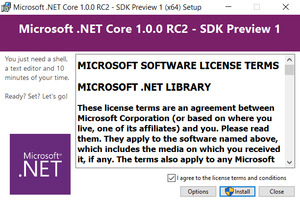
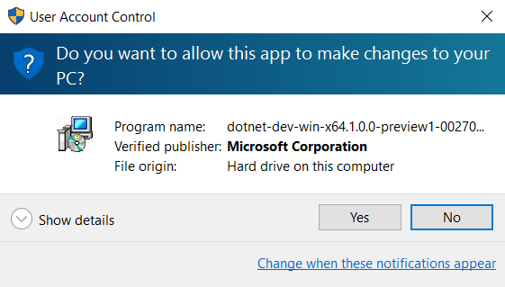
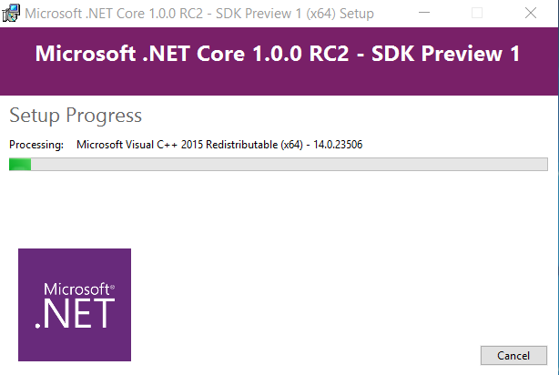
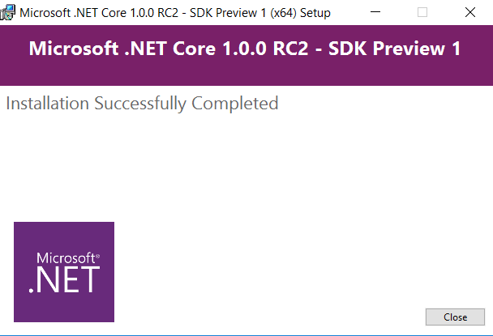

Installing .Net Core on Windows
Here are the steps to install .Net Core in Windows, as instructed in .Net Core web site
Install .Net Core SDK for Windows
Click on the link that says "the .NET Core SDK for Windows".
Run the downloaded installer
Allow changes
Click "Yes"

Installation takes place...
That's it!
Confirm installation
Go to the Command Prompt and:
> dotnet --versionThat should output:
1.0.0-preview1-002702